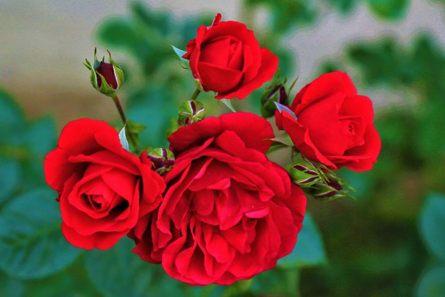
Beli Mawar Merah
Warna merah ini melambangkan cinta dan kekaguman yang 'bold'. Mawar merah adalah mawar terbaik untuk hari Valentine karena warna merah dikaitkan dengan cinta yang bergairah dan romantis.
Beberapa kisah mengatakan, mawar merah pertama diciptakan ketika dewi Yunani Aphrodite tergores duri mawar putih, menyebabkan mawar itu menjadi merah.
Mawar Pink
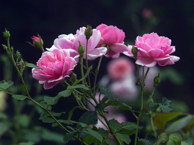
Beli Mawar Pink
Jika mawar merah dinilai 'bold' alias berani, semua sepakat kalau pink lebih menyiratkan kelembutan.
Mawar pink menyimbolkan keanggunan, syukur dan kegembiraan. Namun beda pesan, beda pula mawar pink yang Anda perlukan.
Di pasaran Anda akan menemukan mawar pink dengan tiga gradasi yakni, lebih tua (deep pink), sedang (medium pink) dan pink muda (light pink).
Mawar Putih
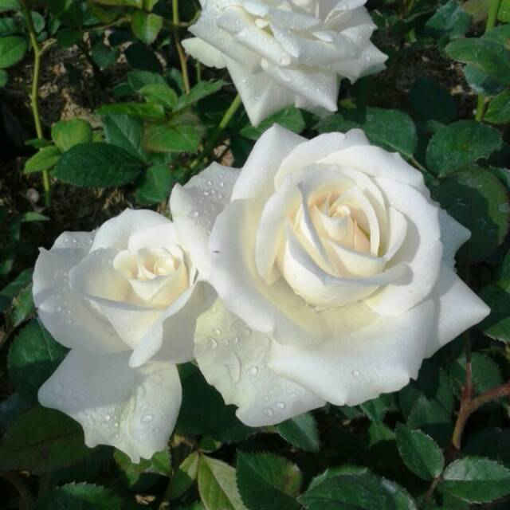
Beli Mawar Putih
Mawar putih melambangkan kemurnian, kepolosan, dan awal yang baru.
Warnanya yang putih bersih membuat mawar putih digunakan sebagai simbol kebaikan.
Selain itu, karena bunga mawar putih memiliki arti yang bagus.
Misalnya digunakan dalam acara pernikahan, melambangkan kasih sayang yang tulus dan penghormatan untuk mengenang jasa seseorang.
Mawar Ungu
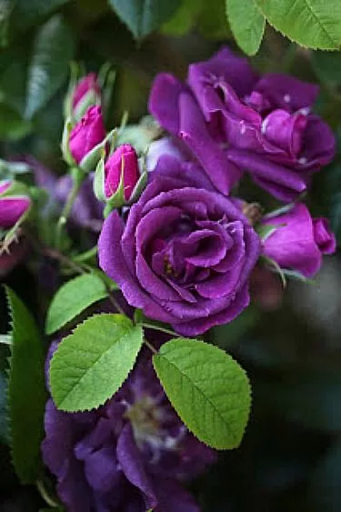
Beli Mawar Ungu
Warna Ungu pada mawar sering dikaitkan dengan pesona, keajaiban, kemeriahan, sekaligus misteri. Warna ini memiliki makna khusus yang romantis, yaitu cinta pada pandangan pertama.
Mawar ungu lebih mirip dengan gelora sesaat daripada hubungan yang panjang dan penuh cinta.
Mawar Delight
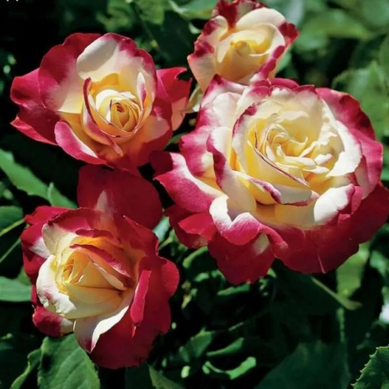
Beli Mawar Delight
Tanaman mawar double delight merupakan hasil perkawinan silang.Kelopak bunganya cenderung memiliki dua warna, tergantung dari jumlah sinar matahari yang didapatkan selama ia tumbuh.
Kelopak bagian dalamnya berwarna putih, sedangkan kelopak paling luarnya berwarna merah. Jumlah kelopaknya mencapai 30 helai. Aromanya sangat kuat dan manis.
Mawar Kuning
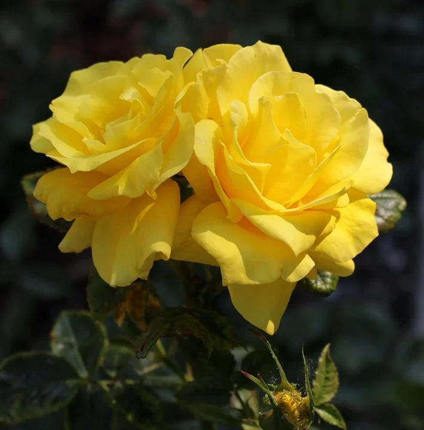
Beli Mawar Kuning
Pada abad ke-19, mawar kuning berarti kecemburuan dan ketidaksetiaan. Untungnya, makna tersebut berubah pada zaman modern ini, yaitu menjadi bunga yang merepresentasikan persahabatan, kegembiraan, dan kepedulian. Mawar berwarna sinar matahari ini juga menyampaikan kehangatan, kesenangan, dan perhatian.
KRISAN
Chrysanthemum inodorum
Beli Chrysanthemum inodorum
Varian tanaman krisan satu ini memiliki kelompak berwarna putih bersih.
Namun, di bagian tengahnya terlihat ada semburat berwarna kucing cerah.
Jenis ini termasuk yang paling banyak disukai penggemarnya karena dapat awet tumbuh pada pohonnya hingga lebih dari 2 bulan. Pohon bunganya tak terlalu tinggi (sekitar 35 hingga 40 cm).
Chrysanthemum Carinatum
Beli Chrysanthemum Carinatum
Warna bunganya lebih mencolok. Jenis ini memiliki tiga macam warna pada kelopaknya dengan bentuk melingkar. Bunga ini banyak pula dijadikan sebagai pengisi buket bunga dan hiasan ruangan karena warnanya cerah dan mencolok. Kelebihan bunga antara lain cepat tumbuh, bahkan dapat mekar setelah 2 minggu masa penanaman.
Crhysanthemum koreanum
Beli Crhysanthemum koreanum
Jenis ini punya ciri spesifik yakni bercabang dan mempunyai banyak ranting pada batangnya. Banyaknya cabang dan ranting inilah yang menjadikan bunga krisan ini menjadi berbentuk seperti membulat.
Krisan di Amerika dijadikan penghias mode banyak wanita, pelengkap dekorasi rumah dan hotel dan simbol kekuatan hubungan kekasih.
ANGGREK
Anggrek Bulan
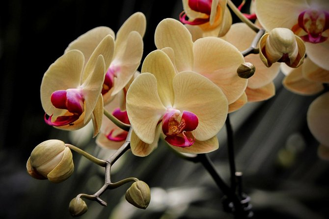
Beli Anggrek Bulan
Anggrek bulan (Phalaenopsis amabilis) merupakan jenis anggrek (Orchidaceae) yang mempunyai ciri khas kelopak bunga yang lebar dan berwarna putih. Meskipun saat ini sudah banyak anggrek bulan hasil persilangan (anggrek bulan hibrida) yang memiliki corak dan warna beragam jenis.
Anggrek Vanda
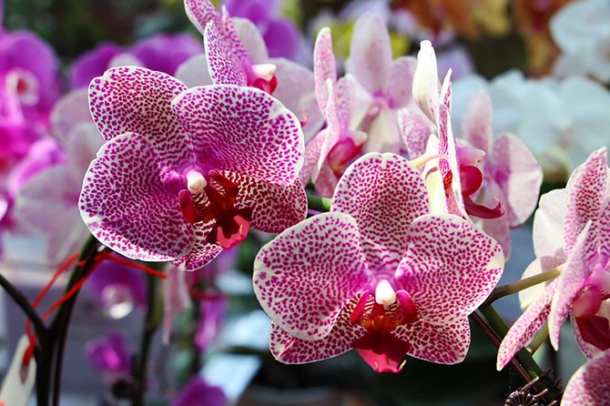
Beli Anggrek Vanda
Anggrek vanda merupakan salah satu jenis anggrek yang sangat terkenal akan keindahan bunganya. Vanda sendiri berasal dari bahasa sansekerta yang berarti Indah atau cantik. Walau bunganya tidak seawet anggrek bulan, tetapi bentuk, corak, dan keanekaragam warnanya tidak kalah cantik dari anggrek bulan.
Anggrek Dendrobium
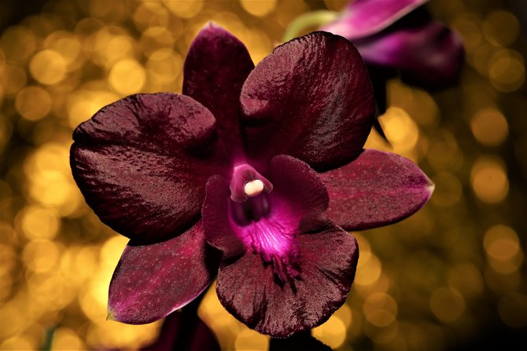
Beli Anggrek Dendrobium
Dendrobium adalah salah satu marga anggrek epifit yang biasa digunakan sebagai tanaman hias ruang atau taman. Bunganya sangat bervariasi dan indah. Dendrobium relatif mudah dipelihara dan berbunga. Pola pertumbuhan anggrek Dendrobium bertipe simpodial, artinya memiliki pertumbuhan ujung batang terbatas
BUNGA LAIN
Lily
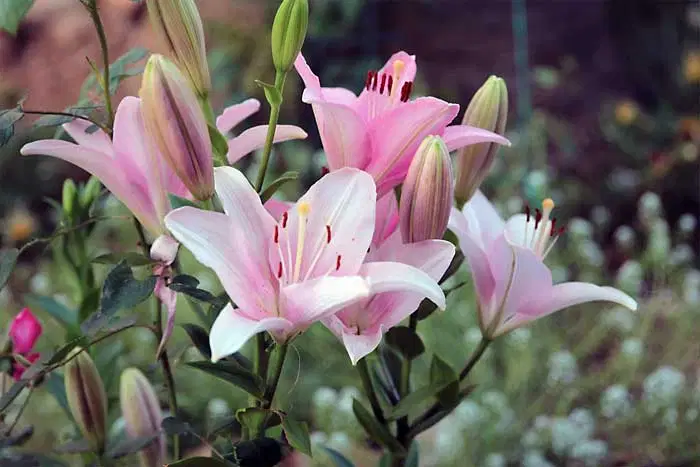
Beli Lily
Lily merupakan tanaman berbunga yang tumbuh dari umbi. Terdapat sekitar 100 jenis tanaman lily. Berwarna lembut serta memiliki keharuman yang khas membuat bunga ini seringkali ditanam sebagai tanaman hias atau bunga potong.
Tulip
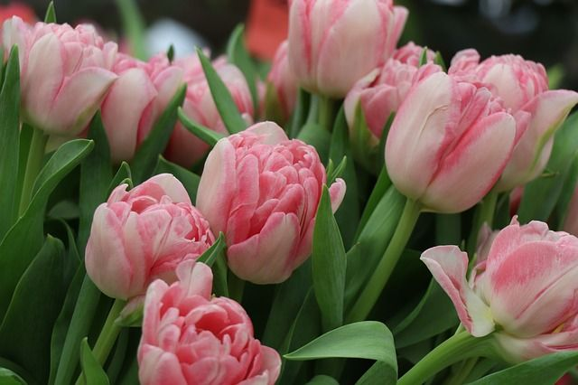
Beli Tulip
Selama ini bunga tulip identik dengan negara Belanda. Selain itu, bunga tulip juga menandakan musim semi.
Bunga tulip dengan kelopak putih memiliki arti sebagai permintaan maaf atau pengampunan. Tulip berwarna merah menandakan cinta sejati.Sedangkan bunga tulip yang berwarna ungu memiliki arti simbol kerajaan
Sedap Malam
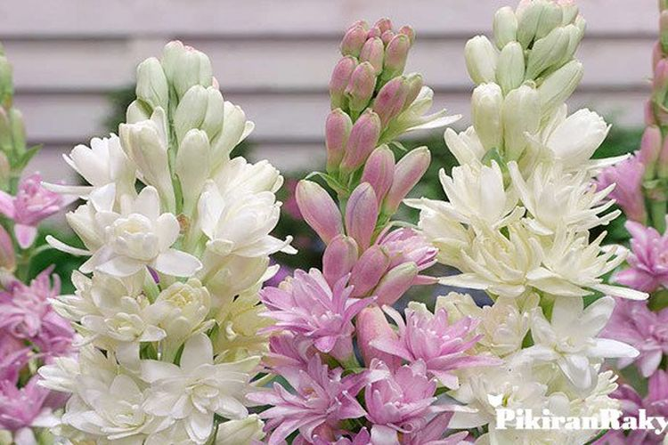
Beli Sedap Malam
Sedap malam adalah tumbuhan hijau abadi dari suku asmat Minyak dari bunga ini digunakan dalam pembuatan parfum. Nama tuberosa menunjukkan bahwa tumbuhan ini memiliki umbi. Saat ini dikenal sekitar 12 spesies dari genus Polianthes. Bunga sedap malam biasa mekar di malam hari.